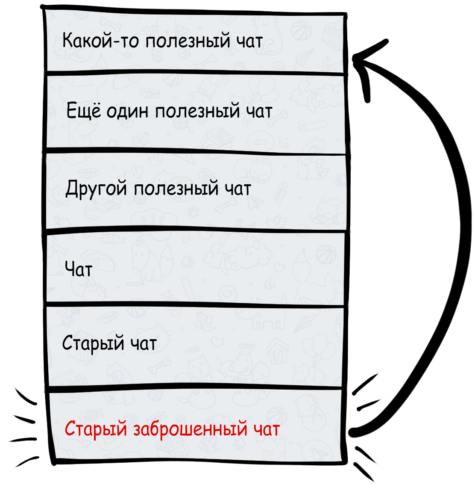
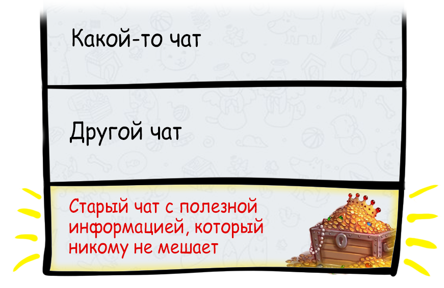

Не выходите
из заброшенных чатов!

— Но почему? Они же мне больше не нужны.
Старые чаты сами по себе никому не мешают. Они сидят в недрах истории чатов и любой может обратиться к ним за полезной информацией, которая может в них содержаться.
Однако, когда вы выходите из чата, вот только тогда сообщение о вашем выходе поднимает его в верх истории и начинает всех раздражать, тем самым провоцируя цепную реакцию выходов.

Чтобы избежать этого нужно всего лишь оставить старые чаты в покое и не выходить из них, когда они попадаются вам на глаза в истории.
В следующий раз, когда вы увидите как кто-то выходит из чата и начинает эту цепную реакцию, скиньте ему и в чат ссылку на этот сайт и дайте чату спокойно утонуть обратно в историю, не выходя из него.